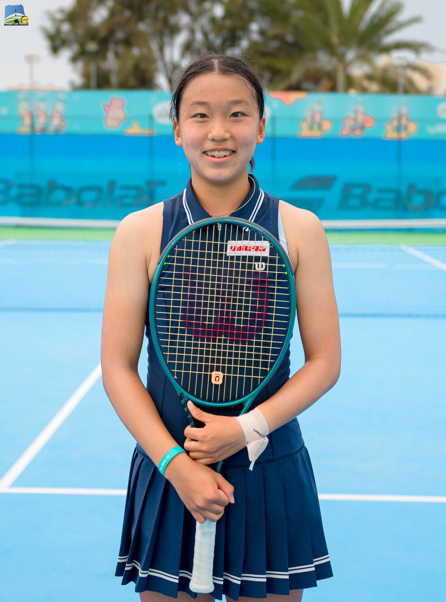
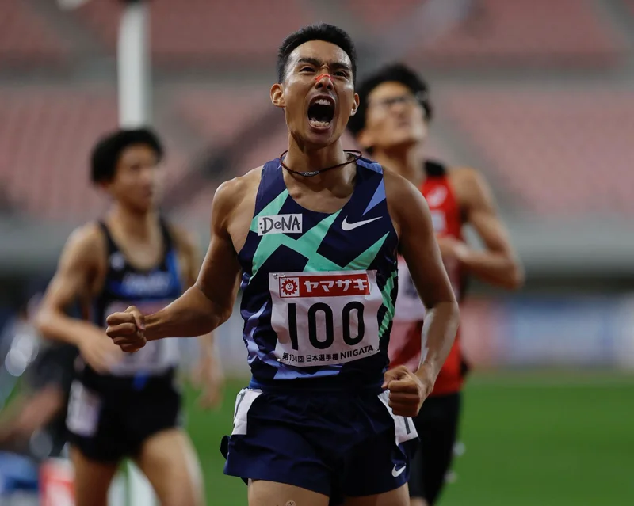
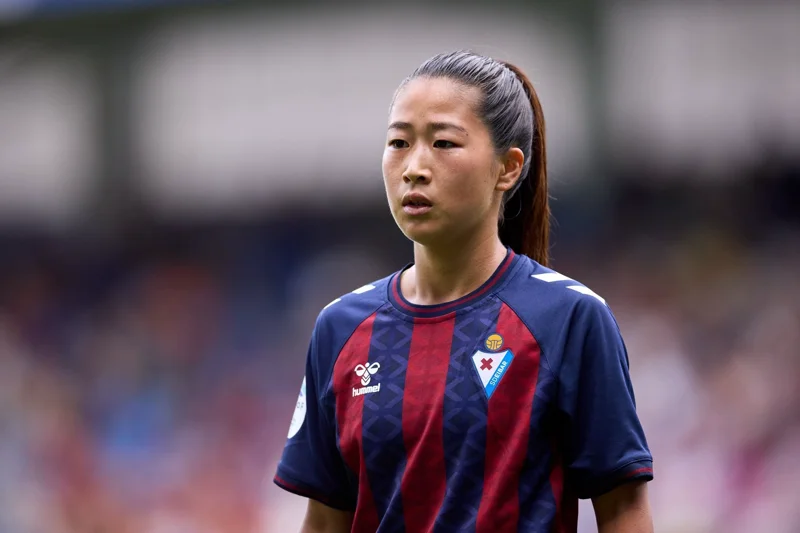
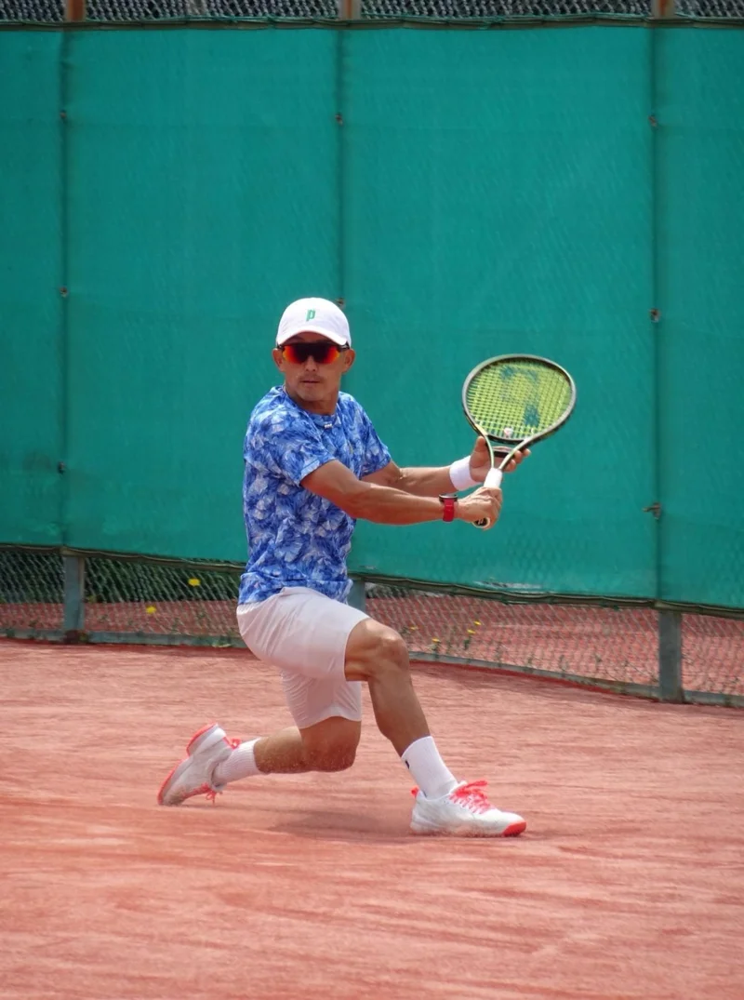
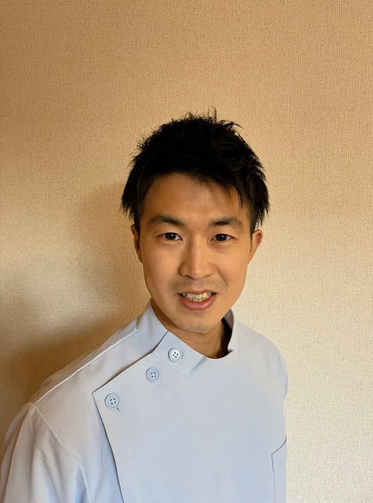
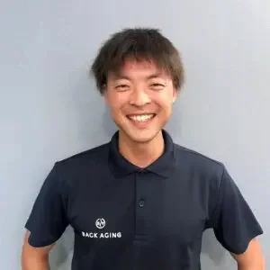
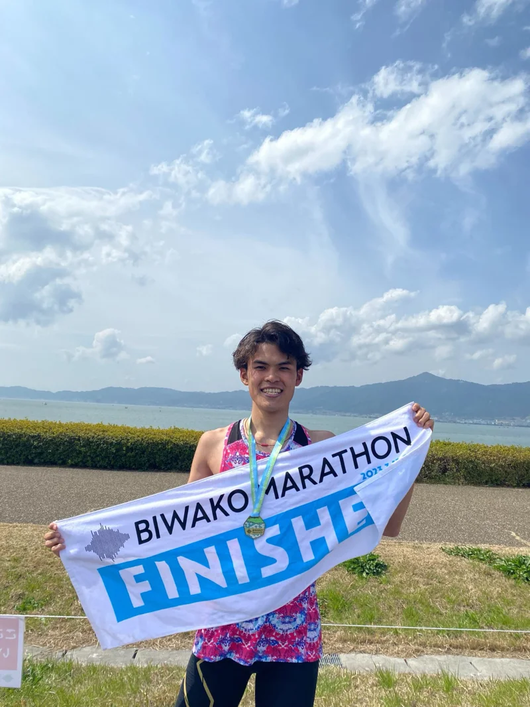

「練習すると、また怪我するのでは？」という恐怖
長期の不安から全力でトレーニングできない。練習量を増やすと怪我が再発し、休むと落ちる。この負のループから抜け出せない。
アスリート再生プログラム「リスタート」
このプログラムは、長年怪我が続くアスリート、良かった時の動きを再現できないスランプの中にいるアスリートのために存在します。
初月は全額返金保証・LINEチャットで相談も受付中
あなたがアスリートとして日々を捧げているにもかかわらず、 怪我が続いたり、スランプから抜け出せていないのだとしたら、 それは努力不足なのではなく、あなたの動きが あなたの骨格に合わない不自然な形になっているからかもしれません。 アスリート再生プログラムは先天的な骨格の違いを16タイプに分類し、 骨格タイプ上、最も自然な動きを取り戻す トレーニングやコンディショニングを提供しています。
努力が結果につながらない理由
長期の不安から全力でトレーニングできない。練習量を増やすと怪我が再発し、休むと落ちる。この負のループから抜け出せない。
若い頃のようなキレがなくなり、回復にも時間がかかる。「もう限界かもしれない」と焦りを感じている。
様々な方法を試しても、根本的な解決には至らない。「なぜ自分だけが？」という孤独感に苛まれている。
多くのアスリートが気づき始めています。教科書通りの「理想的なフォーム」に、どこか違和感がある——その感覚は、決して間違っていません。
「理想のフォームに合わせる」のではなく、「あなたの身体に合ったフォームを見つける」——その発想の転換が、全てを変えます。
どれだけ練習しても身体が良かった時のように動かない。怪我を繰り返す、同じ場所に負荷が集中する、復帰しても出力が戻らない――それは年齢でも気持ちでもなく、骨格に合わない動きが原因かもしれません。
骨格には個体差があり、タイプが違えば、パワーポジションの形も、走るフォームも、スイングフォームも大きく違うものになります。絶対的な証拠として、全ての競技に共通して、トップアスリートたちのフォームは、一つではなく、千差万別です。
骨格タイプが違うことは、右利きと左利きが先天的に異なるのと同じく、無理に違うタイプに矯正すべきではありません。それに逆らう動きは無駄な負荷や非効率性を生みます。あなたの骨格タイプと異なるフォームでは、頑張るほど一箇所に負荷が集まり、再発を繰り返します。
まずは、画一的な理想論ではなく、あなた自身の「個体差」を正しく知ること。あなただけの身体の取扱説明書を読み解くことから、再生は始まります。
骨格16タイプの分析
「先天性連動」が、あなたのパフォーマンスを最大化する
全身動作において、身体のどこが動きを主導しているのかを見極めます。
始点・力点判別に基づき、あなた専用のウォーミングアップ、トレーニング、ケアメニューを作成します。
専属トレーナー、医師、理学療法士、鍼灸師が連携し、あなたをトータルでサポートします。
プログラムは、個体差の判別から始まります。 骨格タイプを判別して、あなたにとって最も自然な動作を再学習します。
骨格を16タイプに分類し、全身動作において、身体のどこが動きを主導しているのかを見極めます。医師・理学療法士・鍼灸師・トレーナーがひとつのチームとなり、故障が再発しない全身の連動をインストール。フォーム矯正ではなく、身体の本来のOS通りに動くように調整し直すアプローチです。
多くのアスリートは、動きがハマった時に、「新しい感覚だ！」ではなく、「これは知っている感覚だ。絶好調だった時の感覚だ！」と笑ってくれます。
あなたの姿勢や動作を、専門家チーム全体で分析しながら、トレーニングメニューをオーダーメイドで作ります。
戻れるという確信
失われたと思っていた感覚が、取り戻した瞬間。あなたは、戻れるという確信を持つかもしれません。身体と理論が一致したとき、あなたの努力は再び、結果へとまっすぐに繋がります。
再発への恐れが消え、失ったはずの滑らかな連動が、確信として身体に蘇る。自分の身体を信じて、もう一度スタートラインに立てる。それが私たちの目指すゴールです。
HURECは、あなたの感覚を信じながら向き合う伴走者です。「共にあの”ハマった時の感覚”を取り戻しましょう」
「練習すると怪我する」という負のループを断ち切る。
一時的な改善ではなく、長期的に積み重ねられる身体へ。
あなたの身体が持つ、本来のポテンシャルを引き出す。
それぞれの「再生」の瞬間
優勝という結果はもちろん嬉しかったですが、連戦でも痛みに悩まされることなく最後まで戦い抜けたことは、自分にとって大きな変化でした。

テニスプレイヤー／2025年 U16日本チャンピオン
小学生年代から全国大会で活躍するも、繰り返す怪我に悩み、「試合が続くと必ずどこかが痛くなる」状態が続いていました。プログラム開始から2ヶ月後の全日本ジュニアU16で優勝。その後の5週間連続の過酷な試合転戦でも、パフォーマンスに影響するような痛みはほとんど出ず、最後まで戦い抜くことができました。
陸上選手としての経験と先天性連動を知ったことを通して伝えたいのは、「人それぞれ自分にあった走り方・フォームがあって良い」ということです。

陸上競技選手／日本選手権1500m 3度優勝
箱根駅伝6区の区間記録保持者である館澤選手は、当初他の選手が実践するのを見て「先天性連動」を知りました。片半身だけのトレーニングで左右の動きの違いを体感したことをきっかけに本格的に導入。トレーニングを続ける中で、パフォーマンスの指標としているジョグの調子が格段に上がり、「いいリズムでスーッと走り続けられる」ようになったと語ります。
HURECの個体差に基づいたトレーニングを受けて、自分の体の特徴を理解し、それに合わせたトレーニング方法を学ぶことができました。

プロサッカー選手
スペインリーグで活躍するプロサッカー選手の米井選手は、手術後のリハビリでも改善しなかった膝の痛みが「先天性連動」トレーニングで完全に消失したことに衝撃を受け、自らその理論を学ぶことを決意。一番の強みは「個体差を前提とした理論」だと語ります。
僕みたいに長く競技を続けたいアスリートには、先天性連動のトレーニングに一度は触れてほしいと思います。

プロテニスプレイヤー
プロテニスプレイヤーの比嘉選手は、信頼するコーチが長年の原因不明の痛みから解放されたのを見て「先天性連動」トレーニングを開始しました。HURECのメソッドによって「ストレッチなしで柔らかい状態が保てる」ように劇的に変化。楽に強くボールが打てるようになり、長年の課題だったバックハンドも改善しました。
アスリート再生プログラム「リスタート」の5つの特徴
研究で体系化した骨格個体差の知見を、競技現場で再現できる形に翻訳。努力が報われる方向へ導くための仕組みを整えています。
16ある骨格タイプを分析し、姿勢・走り方・フォームのズレを特定。あなた専用の動き方を導き出します。
どんな競技にも通じる、あなただけの「最適な動き」を再現します。
HUREC認定連動性トレーナーが専任で伴走。課題の変化に合わせてプログラムを柔軟に調整します。
医師・理学療法士・鍼灸師などが連携し、各専門領域の知見を統合。再発しない身体づくりを支えます。
トレーニング動画や状況をLINEで共有。フィードバックを返し、日々の判断を後押しします。
各分野の専門家が連携する伴走チーム
再生は一人ではできません。医師、理学療法士、鍼灸師、トレーナーが身体データをリアルタイムで共有し支えます。医師・理学療法士・鍼灸師・フィジカルトレーナー、そして研究チームがデータ共有とフィードバックで、遠征先やオンラインでも途切れない伴走を実現します。チームは選手ごとに編成し、専門家同士がデータと現場感覚を往復させながら6ヶ月間伴走します。
10年以上の骨格個体差研究
「なぜ子どもは柔らかく、大人は硬くなるのか」「トップ選手のフォームが一人ひとり違うのはなぜか」先天性連動の研究から導き出した16タイプの骨格の個体差が、あなたの努力を結果につなげる動作をデータとして裏付けます。
トレーナー紹介

整体サロンReviv代表／元甲子園球児／連動性アドバンストレーナー
小学生時代から野球に打ち込み、全国大会出場・日本代表に選出。高校では甲子園を経験し、アルティメットで日本代表としても活躍。繰り返す怪我を乗り越え、連動性トレーニングの力で根本改善を実現。現在は完全予約制整体サロンRevivを開業し、アスリートから一般まで幅広くサポートしています。
大学時代には、腓骨筋の3度の肉離れ、足関節の靭帯完全断裂など、繰り返す怪我に悩まされ2年間競技からの離脱。100ヶ所以上もの治療院に行くも、同じ場所を怪我する負のループから抜け出せず、完治には至らず苦しむ。その経験から、対処療法ではなく根本改善のトレーニングや治療に興味も持ち始める。
そんな時、連動性トレーニングに出会い一切の怪我を克服すると共に、自分と同じように怪我や身体の不具合に苦しんでいる人を救いたいと思い、大学卒業後すぐ、完全予約制整体サロンRevivを開業。甲子園出場・日本代表としての経験と現役アスリートという強みを活かし、身体の動かし方・使い方を再教育し全身の連動性を獲得することで根本改善を実現。クライアントには、アスリートから一般の方まで幅広い方に対応し、現在に至る。

はり師・きゅう師／連動性シニアトレーナー
小学4年生から野球を続け、脊椎分離症をきっかけに医療従事者の道へ。大学卒業後はフリーランストレーナーとして活動し、パデル日本代表の専属トレーナーなどを担当。医療従事者向け勉強会を主催しながら、競技現場と医療の橋渡しを行っています。
現在は、中学・高校硬式野球部のメディカル兼フィジカルトレーナー・パデル日本代表（2023）北尾亜希選手の専属トレーナーなど、多数の仕事を掛け持ちフリーランストレーナーとして活動中。スポーツ選手の他に、変形性股関節症や変形性膝関節症など高齢者の患者さんを受け持つことや、オンライン治療での実践経験も豊富。また、理学療法士・鍼灸師・柔道整復師・ATなどが参加する医療従事者向けの勉強会も定期主催しています。

理学療法士／連動性シニアトレーナー
名古屋大学医学部保健学科卒業後、市民ランナーの膝痛改善に携わる理学療法士。自身も怪我に苦しんだ経験から連動性トレーナー資格を取得し、オンラインと対面でランナーをサポート。市民ランナーとしてもフルマラソンに挑戦し、自己ベスト2時間53分20秒を更新中です。
中学3年時に、腰椎分離症で中学校最後のレースを棄権、続く高校時代はシンスプリント、股関節・臀部の怪我などで、一度も満足な練習が積めず、記録を伸ばせなかった。そんな過去から、怪我なくスポーツを楽しみチャレンジできることに大きな価値を感じ、名古屋大学にて理学療法士を志す。
理学療法を基礎としながらも、怪我の根本改善には、動作分析や動作改善が必須と考え、HUREC認定連動性トレーナーの資格も取得。在学中から、学生トレーナーとして仕事を初め、卒業と同時にフリーランストレーナーとして名古屋を拠点に活動。現在は身につけたトレーナーとしての技術を自分の身体にも実験し、一切の怪我を克服し、市民ランナーとしてもフルマラソンに挑戦中。自己ベストは2時間53分20秒。
該当する方と対象条件
下記のいずれかに当てはまる人は、大きくパフォーマンス改善できる可能性があります。
プログラム料金とサポート
あなたの再生を全力でサポートするための、集中プログラムです。身体のOSを書き換える6ヶ月。最高のパフォーマンスを取り戻すための価格とプランをご用意しました。
6ヶ月集中プラン
フィードバック協力枠
現在、プログラム改善のためのフィードバックにご協力いただける方を対象に、特別なモニター価格をご用意しています。
※モニター枠には限りがございます。適用条件など、詳細はカウンセリングにてお問い合わせください。
1ヶ月 全額返金保証: プログラムにご満足いただけない場合、開始から1ヶ月以内であれば理由を問わず全額返金いたします。
6ヶ月のプログラム終了後も、あなたのパフォーマンスを継続的に支えるためのサポートプランをご用意しています。月々のメンテナンスやさらなるレベルアップにご活用ください。（詳細はプログラム終了時にご案内します）
骨格から再生する6ヶ月
6ヶ月（全24セッション）で骨格タイプに沿った動き・トレーニング・ケアを再構築。身体が再び「つながる感覚」を取り戻します。
１６種類の骨格タイプを判別し、再発要因を洗い出します。日常のウォームアップやセルフケアも個体差に合わせて設計。
骨格タイプや競技特性に基づいて、トレーニングやケアなど、習慣をアップデートしていきます。遠征期もオンラインで動作を共有し、連動が途切れないよう伴走します。
骨格タイプに基づいた良い習慣を形成した後に、より競技環境に適応した高強度トレーニングを行う時期。
お申し込みの流れ
まずはLINEで現状を共有いただくところから。カウンセリングで目標と課題を擦り合わせ、納得いただいてからプログラムが始まります。
まずは公式LINEへお気軽にご連絡ください。「まずはチャットで相談したい」「カウンセリングを予約したい」など、ご希望をメッセージいただければ、24時間以内にご案内します。
現状の課題や競技目標をヒアリングし、アスリート再生プログラムのメソッドやサポート体制を詳しくご説明します。ご希望の方には、その場で身体の変化を実感できる簡単なオンライン体験セッションも可能です。
内容と料金にご納得いただけましたらご契約となります。あなた専属の伴走チームが、プログラム開始から目標達成までをサポートします。
よくある質問
大きなご決断だからこそ、効果にご不安を感じるのは当然のことです。私たちが1ヶ月の全額返金保証を設けているのは、アスリート再生プログラムのメソッドへの自信の証であり、何よりもあなた自身に「これなら変われる」と心からご納得いただいた上で、プログラムを続けてほしいからです。最初の1ヶ月で、ご自身の身体の可能性や、これまでのアプローチとの違いを実感していただけると確信しています。万が一、私たちの提供する価値にご満足いただけない場合は、理由を問わず全額返金いたしますので、どうぞご安心ください。あなたのリスクをなくし、本気で変わりたいと願う気持ちだけを応援するための制度です。
効果の感じ方には個人差がありますが、多くの方が最初の数回のセッションで、これまでとの違いを実感されています。パフォーマンスとして明確な結果に結びつくまでには、新しい身体の使い方が無意識レベルで定着するまでの期間（目安として6ヶ月〜）が必要となりますが、その過程での小さな成功体験を大切に、トレーナーが伴走します。
プログラムの基本となるのは、6ヶ月で全24回実施する専属トレーナーとのセッションですが、最も重要なのはセッションで得た感覚を日常に繋げることです。普段のウォームアップや身体のケアに組み込める、あなただけの簡単な個別メニューを処方します。この意識的な積み重ねが、身体を再教育する上で大きな力となります。
はい、もちろんです。アスリート再生プログラムは、現在のトレーニングを置き換えるものではなく、その効果を最大化するための「身体のOSをアップデートする」ようなものだとお考えください。身体の連動性が高まることで、コーチの指導がより深く理解できたり、練習の質が向上したりする効果が期待できます。ご希望があれば、現在のコーチやトレーナーの方と連携し、練習メニューとの最適な組み合わせをご提案することも可能です。
アスリート再生プログラムは、特定の競技の技術を教えるものではなく、あらゆるスポーツの土台となる「身体の最適な動かし方」を再教育するものです。そのため、どんな競技のアスリートにも効果を実感していただけます。球技における切り返しの速さ、格闘技における出力の強さ、陸上競技における推進力など、競技ごとの特性を理解した上で、あなたの骨格に合った最適な動きを一緒に見つけ出していきます。
お忙しいアスリートの皆様にとって、日程調整は大きな課題ですよね。ご安心ください。アスリート再生プログラムでは、あなたの競技スケジュールを最優先に、専任トレーナーが密に連携してセッションを組みます。柔軟に調整し、遠征先でのサポートにも対応可能ですので、無理なくプログラムを続けていただけます。
アスリート再生プログラムは治療院ではありませんので、怪我の「治療」を直接行うわけではありません。私たちの目的は、怪我の根本原因となっている身体の使い方のクセや非効率な連動を、あなたの骨格タイプに合わせて最適化することです。その結果として、痛みが再発しない身体に変わり、多くのクライアントが長年の悩みから解放されています。対症療法ではなく、根本から身体を育て直すアプローチとお考えください。
アスリート再生プログラムではアスリートのプライバシー保護を最優先事項と考えております。ご相談内容やプログラムの実施について、ご本人の許可なく外部に情報が漏れることは一切ありません。コミュニケーションは個人のLINEやメールを使用し、セッションもオンラインや提携先の個室施設で実施するなど、最大限配慮いたします。安心してご相談ください。
烏山 司
プロジェクト責任者